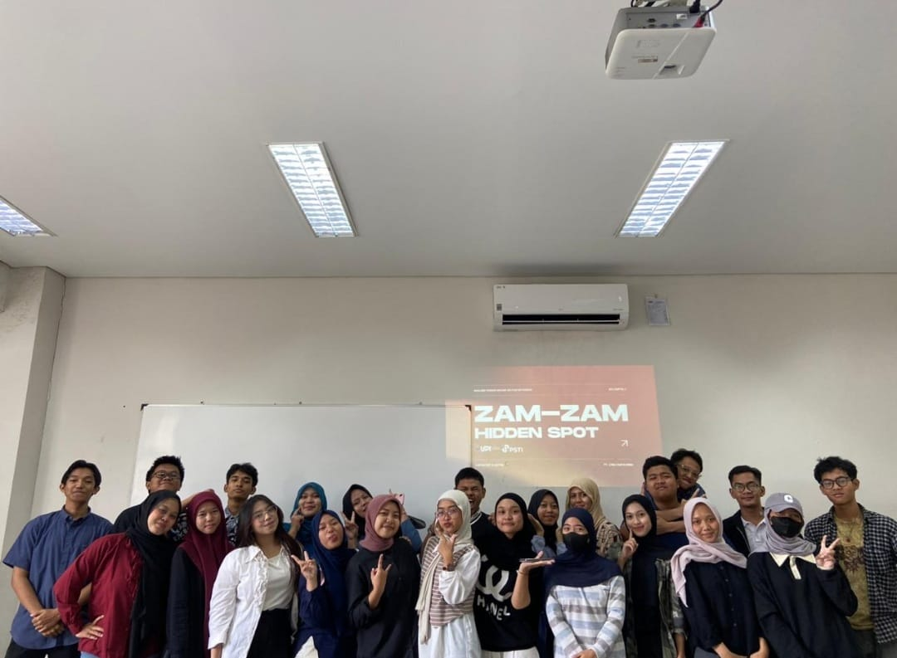

Project 1: Membuat alat IoT sederhana

Pada akhir semester satu, saya bersama kelompok menyelesaikan tugas
UTS mata kuliah Pengantar PSTI dengan membuat alat IoT berupa penyiram
tanaman otomatis. Alat ini menggunakan Arduino Uno sebagai
mikrokontroler, sensor kelembapan tanah untuk mendeteksi kondisi
tanah, LED sebagai indikator, serta pompa air untuk mengalirkan air ke
tanaman. Sistem bekerja dengan membaca tingkat kelembapan tanah secara
otomatis. Jika tanah dalam kondisi kering, pompa akan aktif untuk
menyiram tanaman. Sebaliknya, ketika tanah cukup lembap, pompa akan
berhenti. Program Arduino dibuat menggunakan bahasa C/C++ melalui
Arduino IDE.
Buka situs youtube ini untuk melihat langkah pembuatan dan cara kerja
projek
Project 2: Membuat Game sederhana

Pada akhir semester dua, saya bersama kelompok menyelesaikan tugas UAS
mata kuliah Analisis dan Perancangan Sistem Informasi dengan membuat
game berbasis cerita 3D berkonsep novel interaktif. Game ini dapat
dimainkan melalui laptop maupun perangkat mobile. Ceritanya berfokus
pada Kreswara yang menemukan virus hingga beberapa wayang masuk ke
Dimensi Hybrid. Untuk mengembalikannya, Kreswara harus memasuki
dimensi tersebut dan bertemu As-leen, sosok misterius yang membantunya
menyelesaikan misi. Dalam perjalanan, Kreswara menghadapi berbagai
tantangan dan boss. Akhir permainan bergantung pada pilihan pemain.
Buka Drive untuk melihat detail hasil projek
Project 3: Membuat project lampu otomatis

Pada akhir semester satu, saya bersama satu kelas telah menyelesaikan
tugas UAS mata kuliah Pengantar PSTI dengan membuat project IoT berupa
miniatur lingkungan perumahan dengan sistem lampu otomatis. Project
ini berbentuk kotak yang berisi miniatur rumah, jalan, dan beberapa
elemen lingkungan seperti hewan. Sistem menggunakan sensor cahaya
untuk mendeteksi kondisi sekitar. Ketika gelap, lampu pada miniatur
rumah dan lingkungan menyala otomatis. Sebaliknya, ketika terang,
lampu mati. Project ini menjadi penerapan sederhana IoT dalam
merespons perubahan kondisi lingkungan.
Buka situs youtube untuk melihat dokumentasi pembuatan dan cara kerja
project
Project 4: Membuat showcase Pendidikan Pancasila

Pada akhir semester satu, saya bersama kelompok menyelesaikan tugas
UAS mata kuliah Pendidikan Pancasila dengan mengadakan showcase hasil
diskusi isu lingkungan dan eksploitasi wilayah di Papua. Kami membahas
permasalahan tersebut melalui kajian sederhana dalam bentuk edukasi.
Kami menjelaskan kekayaan alam Indonesia, permasalahan eksploitasi
sumber daya alam, serta dampaknya terhadap lingkungan dan masyarakat.
Pada bagian akhir, kami menawarkan solusi melalui edukasi lingkungan,
pengawasan pengelolaan sumber daya alam, serta penerapan nilai-nilai
Pancasila dalam menjaga lingkungan dan kepentingan bersama.
Project 5: Membuat Buku Pendidikan & Teknologi

Pada akhir semester satu, saya bersama satu kelas menyelesaikan tugas
UAS mata kuliah Bahasa Indonesia dengan membuat sebuah buku berjudul
“Pendidikan dan Teknologi”. Buku ini membahas berbagai keterkaitan
antara perkembangan teknologi dan dunia pendidikan. Beberapa topik
yang dibahas meliputi pemanfaatan AI dalam pembelajaran, dampak
penggunaan teknologi terhadap pendidikan, serta penerapan teknologi
untuk mendukung proses belajar mengajar. Melalui project ini, kami
belajar menyusun dan mengembangkan gagasan dalam bentuk karya tulis
yang membahas isu pendidikan dan teknologi secara terstruktur.
Buka situs Gramedia Digital untuk membeli buku
Project 6: Membuat Platform DIgital

Pada awal semester dua, saya bersama tim mengembangkan platform bisnis
penyedia jasa tour guide bernama Zam-zam Hidden Spot untuk memenuhi
UTS mata kuliah Analisis dan Perancangan Sistem Informasi. Platform
ini menyediakan tiga kategori tour guide, yaitu siswa dan mahasiswa
dari jurusan pariwisata, lulusan pariwisata, serta masyarakat yang
memiliki pengalaman dan pengetahuan mengenai pariwisata. Project ini
bertujuan membuka peluang kerja di sektor pariwisata sekaligus
membantu wisatawan menemukan tour guide sesuai kebutuhan. Kami juga
merancang antarmuka yang aman, terpercaya, dan eksploratif dengan
elemen visual serta design system yang konsisten.
Buka drive untuk melihat detail hasil projek